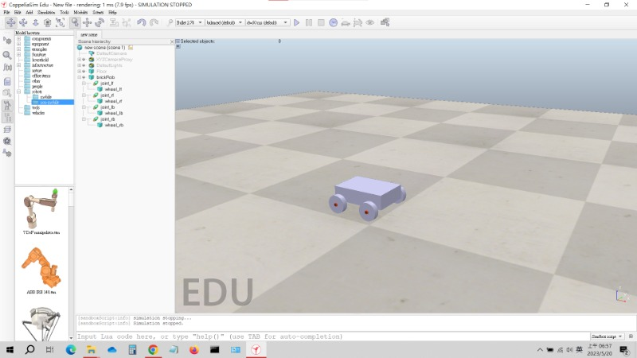

協同過程 <<
Previous pj3
pj3目標:
1.場景中的計時器(.ttm)(✅)
2.添加球員擊球技能、球員倒地再站起
3.球進球框不刪除改收集(圖檔已完成、只缺更改名稱的函式)(✅)
4.球員移動優化(例如:前進可以加右轉一起)(✅)
5.設計球員新外型(✅)
6.另外以建立以機械轉盤傳動計分系統(.ttm)
7.將記分板系統改為.ttm格式(✅)
---
完成進度:
1.第七點完成(pj3ag4_zmq_bubbleRob1.7z, scoreboard.ttm)
◉scoreboard.ttm中不含感測器只要將場景中感測器改名為sensor1、sensor2就可以用了(要跟board同一層)
2.第三點完成(pj3ag4_zmq_bubbleRob2.7z)
◉將sim.removeObject(ball)---刪除球 改為 sim.setObjectAlias(ball, 'ball')---將球改名(球原本名稱為Sphere)
3.第五點完成(brickRob.ttm)
◉將原本車體改為磚塊型，除了解決車體本身會倒的問題之外，還將前進原理更改為四軸驅動，使轉彎更為順暢及合理。

4.第四點完成(brickRob.7z) 延伸更新:(brickRob2.7z)
◉將原本上相左右同時只能執行一個,改為前後可跟左右一起執行,操作性有很大的提升
◉延伸更新為第二種車體運作方式，其原理為更改整個車體角度使其變換方向
5.第六點半完成(機械計分板.rar&機械記分板.ttt)
◉CoppeliaSim4.3.0和CoppeliaSim4.5的版本不相容嘗試啟動記分板.ttt是使用4.3.3版本開啟的齒輪之間會有所卡頓還需改正齒輪外型
修改後圖檔(scoreboard3.ttt scoreboard3.ttm)
◉將圖檔重畫後再重新導進CoppeliaSim中,將齒輪的質量和慣性矩調整後即可順利運行
6.修改尺寸並將磚塊型車體導入場景(zmq_brickRob1.7z)
◉修改足球大小
◉更改感測器位置
7.完成計時器及調整計分板顏色(timer.ttm,scoreboard2.ttm)
◉利用sim.getSimulationTime()函數獲得模擬時間並配合記分板程式,完成實體計時器製作
◉將計分板改為黑底白字(將程式修改為停止模擬時分數歸零)
8.更改球員外型(player.7z)
◉添加球員手部
◉球員本體用導入的開啟碰撞會抖動，所以我加入skin物件(球員外型)然後將本體隱藏
協同過程 <<
Previous